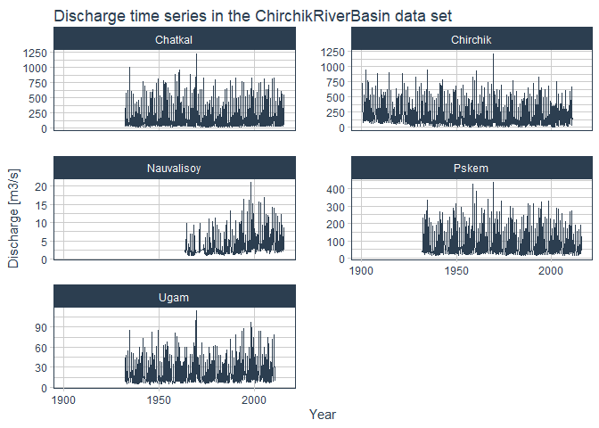

Summary
The R package riversCentralAsia includes a set of tools to facilitate and automate data preparation for hydrological modelling. It thus contributes to more reproducible modeling workflows and makes hydrological modeling more accessible to students and to interested professional modelers.
The package has been developed within the frame of a master level course on applied hydrological modelling in Central Asia and is extensively used in the open-source book Modeling of Hydrological Systems in Semi-Arid Central Asia (Siegfried & Marti, 2022). The workflows are further validated within the Horizon 2020 project HYDRO4U.
While the package has been developed for the Central Asia region, most of the functions are generic and can be used for modelling projects anywhere in the world.
The most important functionalities of the package as well as the raw data that can be processed with the package are described in the the articles of the project documentation site but the examples in the book Modeling of Hydrological Systems in Semi-Arid Central Asia demonstrate the full range of functions available and how to use them in a workflow.
Statement of need
Data preparation comes before hydrological modelling and is actually one of the biggest work chunks in the modelling process. This package includes a number of helper functions that can be connected to efficient workflows that automatize the data preparation process for hydrological modelling as shown in the figure below. This supports a more reproducible modelling workflow and improves the scalability of hydrological modelling.

Figure: Overview over the modelling workflow whos R-components are supported by the riversCentralAsia package (Image source: Marti et al., 2022). Abbreviations are explained in the text. The workflow relies entirely on free, publicly available data and software.
The data preparation step covered by the riversCentralAsia package the derivation of hydrological response units (HRU) using a basin outline and the SRTM digital elevation model (DEM). The derivation of the basin outline and processing of geospatial layers for import to RS MINERVE in QGIS is described in detail in @CAHAM:2022.
Although the High Mountain region of Central Asia is generally perceived as a data scarce region, a number of gridded data products are available that form a fair basis for regional hydrological modelling at seasonal time scales. CHELSA v2.1 is a weather data product at 1 km2 grid resolution. The riversCentralAsia package includes the function gen_HRU_Climate_CSV_RSMinerve which extracts CHELSA precipitation or temperature on the hydrological response units and returns the data in an RS MINERVE readable format.
Glacier thinning and glacier ablation are data sets from open-access literature which can be used to calibrate the GSM model objects (a glacier runoff model) in RS MINERVE. Data on snow water equivalents is sourced from the High Mountain Asia Snow Reanalysis (HMASR) Product and can be used to calibrate the snow module of the HBV model objects (a rainfall-runoff model) in RS MINERVE. The riversCentralAsia package site includes a demonstration of how HMASR data can be used for model calibration. The process is very similar for the calibration of glacier thinning and discharge.
River discharge is taken from the hydrological year books of the HydroMeteorological Institutes in Central Asia. The package riversCentralAsia includes discharge time series from the Chirchiq river basin north-east of Tashkent (Uzbekistan) as well as several functions for loading discharge data, aggregating and visualization of discharge data and discharge statistics (discharge characterization) (see the documentation on the discharge functions).
And last but not least, CMIP6 climate model results area are available from Copernicus. The riversCentralAsia package can be used for downscaling climate projections using CHELSA data and to produce RS MINERVE readable climate forcing. We use quantile mapping as statistical downscaling method (qmap package by L. Gudmundsson).
Hydrological modelling is done using the free hydrologic-hydraulic modelling software RS MINERVE. Some alternative geoprocessing workflows are described in QGIS.
The riversCentralAsia package functionality includes:
Efficient processing of present and future climate forcing, including hydro-meterological data from Central Asia (time series and re-analysis data) and down-scaling of ERA5 re-analysis data (a more advanced topic which is described in the course book)
The preparation of GIS layers for automated model generation and chapter Geospatial data in the course book
Post-processing of simulation results, e.g. extraction and visualisation of snow water equivalent or computation of flow duration curves
I/O interface with the hydrologic-hydraulic modelling software that allows reading and writing of input and output files of the hydraulic-hydrological modelling software RS MINERVE.
While here, we focus on the description of the individual functions, the strengths of the package comes to play mostly when the functions are connected to automatize the data preparation process. These workflows are extensively documented in the book Modeling of Hydrological Systems in Semi-Arid Central Asia.
Currently, a relatively complete dataset of the Chirchik River Basin with decadal and monthly data on discharge, precipitation and temperature is included.
Related packages
The hydraulic-hydrological modelling software RS MINERVE can be accessed through Common Language Runtime (CLR) directly from within R, thus the use of the RS MINERVE GUI can be avoided and multiple runs of large models can be speed up. The github repository RSMinerveR includes examples of how to use CLR commands to use the Visual Basic interface with RS MINERVE documented in the technical manual. This functionality is recommended for advanced users of RS MINERVE only.
Installation
The package requires R version >= 4.1
The package has many dependencies which will be installed alongside riversCentralAsia. To successfully install the package you need prior installations of the following packages: rlang, magrittr, stringr and purrr. Should the installation fail, test if you have the following dependencies installed.
find.package(c("rlang", "magrittr", "stringr", "purrr"))If they are not yet available on your system, please install them using the following commands.
install.packages(c("rlang", "magrittr", "stringr", "purrr"))All other dependencies are installed automatically.
Note that Mac users may have to install the binary version of the dependency package exactextractr manually (not the more recent source version).
Note that Windows users require a working installation of RTools to install packages from github.
You can install the development version from GitHub with:
# install.packages("devtools")
devtools::install_github("hydrosolutions/riversCentralAsia")
library(riversCentralAsia)We recommend testing of the riversCentralAsia package before using it to make sure all dependencies integrate with the riversCentralAsia package as they should. The following step-by-step instructions explain how to do this:
- Go to the packages github repository, click the green code button and select download zip. This will download a zip folder with the package code to your Download folder.
- Extract the package files to a location of your preference. More detailed instructions for this step: right-click on the zip folder and select “extract all”in the pop-up window. Select a location to extract the files to and wait for the process to finish.
- Navigate into the riversCentralAsia folder to in which the freshly downloaded package data is stored and open the riversCentralAsia R project file. This will open the project in your R GUI.
- In the R console, type
devtools::test()and hit enter. The tests will run for about a minute. If the test return[ FAIL 0 | WARN 0 | SKIP 0 | PASS 86 ]at the end, all test were successful and the package will run without problems on your system. Should one of the tests fail, please make sure all the package dependencies are up to date. If the problem persists, please file an issue including the error message you get so we can look at the problem and hopefully solve it.
- If you don’t need the source codes any more, you can safely delete the zip file and the folder with the extracted riversCentralAsia files.
Community guidelines
Please consult the documentation and the examples provided in the package documentation and in the open-source course book Modeling of Hydrological Systems in Semi-Arid Central Asia.
For problems using the functions of for suggestions, please use the issue tool.
We aim for an inclusive, harassment-free environment. Please read our Code of conduct.
Contribution guidelines
We warmly welcome contributions to riversCentralAsia. Please refer to our Contribution guidelines before setting out to make changes.
How to cite
Please cite the package as:
Tobias Siegfried, & Beatrice Marti (2021): riversCentralAsia

Examples
Examples are given in the Articles of the project documentation site. To reproduce the examples in the articles, please download the latest development version from github or the last stable version from zenodo and the riversCentralAsia_ExampleData from Zenodo and extract it to your local system, preferably on the same folder level as the package code:
-
|- riversCentralAsia
|- riversCentralAsia_ExampleData
Alternatively to a manual download from zenodo you can download the entire data set using the library zen4R.
# To download the example files from github
# Example from https://github.com/eblondel/zen4R/wiki
# devtools::install_github("eblondel/zen4R")
library(zen4R)
library(parallel) # Only for Windows/Unix users, Max users mclapply (see zen4R wiki)
zenodo <- ZenodoManager$new(
token = <your_token>, # put your token in "" here (don't share publicly!)
logger = "INFO" # use "DEBUG" to see detailed API operation logs, use NULL if you don't want logs at all
)
# Download the files in the repository to a folder on the same level as the
# R package riversCentralAsia which you downloaded from github.
# -
# |- riversCentralAsia
# |- riversCentralAsia_ExampleData
dir.create("../riversCentralAsia_ExampleData")
download_zenodo(path = "../riversCentralAsia_ExampleData",
doi = "10.5281/zenodo.7389785", parallel = TRUE,
parallel_handler = parLapply, cl = makeCluster(2))Here we have a small example of the hydrometeorological data set included in the package.
library(riversCentralAsia)
library(tidyverse)
#> ── Attaching packages ─────────────────────────────────────── tidyverse 1.3.2 ──
#> ✔ ggplot2 3.4.0 ✔ purrr 0.3.5
#> ✔ tibble 3.1.8 ✔ dplyr 1.0.10
#> ✔ tidyr 1.2.1 ✔ stringr 1.5.0
#> ✔ readr 2.1.3 ✔ forcats 0.5.2
#> ── Conflicts ────────────────────────────────────────── tidyverse_conflicts() ──
#> ✖ dplyr::filter() masks stats::filter()
#> ✖ dplyr::lag() masks stats::lag()
library(timetk)
# Loading and visualising discharge data
ChirchikRiverBasin # load data
#> # A tibble: 29,892 × 14
#> date data norm units type code station river basin resol…¹ lon_U…²
#> <date> <dbl> <dbl> <chr> <fct> <chr> <chr> <chr> <chr> <fct> <dbl>
#> 1 1932-01-10 48.8 38.8 m3s Q 16279 Khudayd… Chat… Chir… dec 598278
#> 2 1932-01-20 48.4 37.5 m3s Q 16279 Khudayd… Chat… Chir… dec 598278
#> 3 1932-01-31 42.4 36.6 m3s Q 16279 Khudayd… Chat… Chir… dec 598278
#> 4 1932-02-10 43.7 36.4 m3s Q 16279 Khudayd… Chat… Chir… dec 598278
#> 5 1932-02-20 44.2 36.3 m3s Q 16279 Khudayd… Chat… Chir… dec 598278
#> 6 1932-02-29 47.7 36.9 m3s Q 16279 Khudayd… Chat… Chir… dec 598278
#> 7 1932-03-10 54.1 39.4 m3s Q 16279 Khudayd… Chat… Chir… dec 598278
#> 8 1932-03-20 63.2 47.6 m3s Q 16279 Khudayd… Chat… Chir… dec 598278
#> 9 1932-03-31 103 60.5 m3s Q 16279 Khudayd… Chat… Chir… dec 598278
#> 10 1932-04-10 103 86.4 m3s Q 16279 Khudayd… Chat… Chir… dec 598278
#> # … with 29,882 more rows, 3 more variables: lat_UTM42 <dbl>,
#> # altitude_masl <dbl>, basinSize_sqkm <dbl>, and abbreviated variable names
#> # ¹resolution, ²lon_UTM42
ChirchikRiverBasin |>
# Filter for the data type, here discharge "Q"
dplyr::filter(type == "Q") |>
drop_na() |>
group_by(river) |>
plot_time_series(
date,
data,
.interactive = FALSE,
.facet_ncol = 2,
.smooth = FALSE,
.y_lab = "Discharge [m3/s]",
.x_lab = "Year",
.title = "Discharge time series in the ChirchikRiverBasin data set"
)
Mentions
The package is used extensively in the course book Modeling of Hydrological Systems in Semi-Arid Central Asia (Siegfried & Marti, 2022).
The workflows presented in the course book, using the riversCentralAsia package, are further validated within the Horizon 2020 project HYDRO4U where future small hydro power potential is evaluated using hydrological modelling.
For R & RS MINERVE users, the package RSMinverveR is recommended which allows the interfacing between R and RS MINERVE (with examples based on the Visual Basic Script examples by CREALP).
Acknowledgement
The preparation of the course book and thus the preparation of the package was financially supported by the Swiss Agency for Development and Cooperation, the German Kazakh University in Almaty and hydrosolutions.
This R package was submitted to the Journal of Open Source Software. We thank @tonyewong and @mengqi-z for their valuable inputs during the review of the package and @crvernon for their editing work.
References
Tobias Siegfried & Beatrice Marti (2022): Modeling of Hydrological Systems in Semi-Arid Central Asia (https://hydrosolutions.github.io/caham_book/). DOI: 10.5281/zenodo.6350042
Marti, B. S., Zhumabaev, A., and Siegfried, T.: A comprehensive open-source course for teaching applied hydrological modelling in Central Asia, EGUsphere [preprint], https://doi.org/10.5194/egusphere-2022-966, 2022.